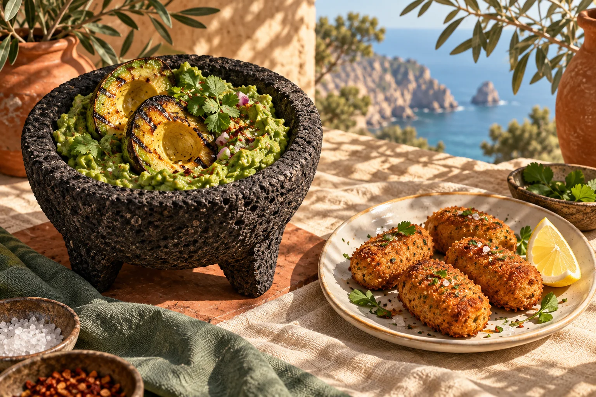
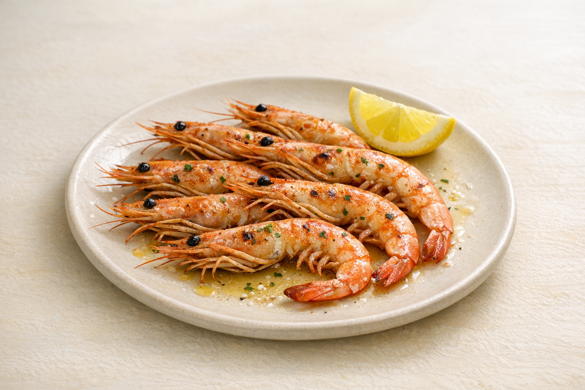

01
Entrantes del fuego y mar
Tomate con Aguacate
14.00 €Ensalada Rusa
10.00 €Ensalada Rusa al pilpil
14.00 €Ensalada de Pulpo
12.00 €Pimientos Asados a la Brasa
12.00 €Pimientos Asados con Ventresca
14.00 €Gazpacho (Temporada)
12.00 €Gambitas de Cristal Fritas con Huevos
12.00 €Aguacate a la Brasa con Queso Feta
12.00 €
02
Delicias del mar
Sardinas
6.00 €Coquinas
16.00 €Gambas Cocidas
12.00 €Gambas a la plancha
18.00 €Langostinos Pil pil o al Ajillo
13.00 €